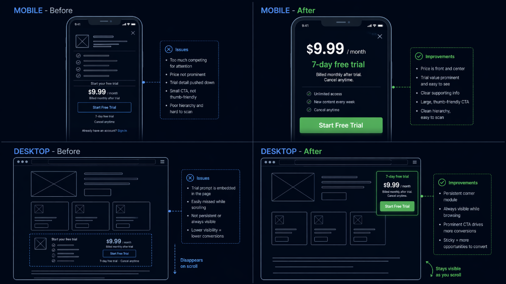

Two Platforms, Two Answers
A subscription-based media platform with significant cross-device traffic. The aggregate conversion rate looked acceptable. Underneath, mobile and desktop were two different buyer populations with two different drop-off patterns, two different failure modes, and they were fighting each other beneath a single "overall CVR" number. Aggregate metrics hide the location of the problem — segment first, then decide what to test.
Phase 1: The Aggregate That Hid Everything
Aggregate Conversion Rate is the statistic most programs quote in stakeholder meetings and the statistic most programs should stop quoting. On this site, the overall number fell within what the category would consider "normal." That number was the mathematical average of two wildly different segments doing wildly different things.
What the dashboard showed (aggregate)
What the segmented funnel revealed
Phase 2: The Two Populations
Mobile · The Fast Browser
Desktop · The Sustained Reader
Two different populations. Two different failure modes. Two different correct interventions. A single unified "responsive" test would have produced noise on both segments and a confused read.
Phase 3: Three Segmented Tests
Mobile Intervention
Desktop Intervention
Third intervention — email capture as progressive profiling
A parallel test targeting top-of-funnel email collection: progressive profiling rather than a single upfront form. Visitors who weren't ready to commit to a trial could share an email address first, receive relevant content, and be re-engaged later. Not a conversion test — a qualified-audience-building test.

Phase 4: Results
The email lift is the important context. The +20% email capture created a qualified audience that fed the subsequent retention and re-engagement programs — producing revenue downstream of the initial test window that the headline numbers do not capture. A portion of the trial conversions in the following quarter came from the email-captured cohort, meaning the email test's true impact was larger than the test's direct measurement.
Tools & Stack
What This Engagement Taught Me
- Aggregate CVR is the number that hides problems. When two segments behave differently, the aggregate is an average of two stories and tells you nothing actionable. Segmented reporting is not a nice-to-have — it's the default from which every other CRO decision should be made.
- Forking by device isn't about building two separate sites. It's about treating each device's experience as its own test surface with its own hypothesis, its own variant, and its own success metric. A test that wins "overall" is often a test that won on one device and lost on the other.
- Mobile and desktop users on the same site are different buyers, not different sizes of the same buyer. Shorter sessions versus longer, thumb-scroll versus keyboard-and-mouse, context-switching versus sustained attention. The interventions that help one population often hurt the other — which is why unified responsive tests produce muddy reads.
- Email capture is a CRO investment, not a lifecycle one. Treating email capture as separate from the conversion program misses the compounding value. A +20% email lift pays off in retention cycles for months after the original test window closes.
- Segment the funnel before you scope a test. Every engagement now gets a device × acquisition-channel segmented funnel pass before any test scoping conversation happens. Twenty minutes of segmentation work prevents entire test categories from being scoped against aggregate noise.